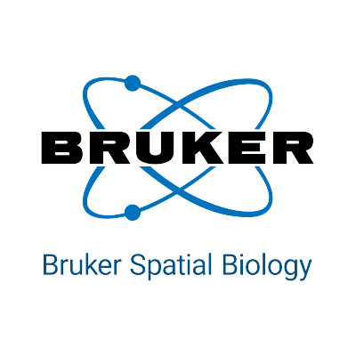
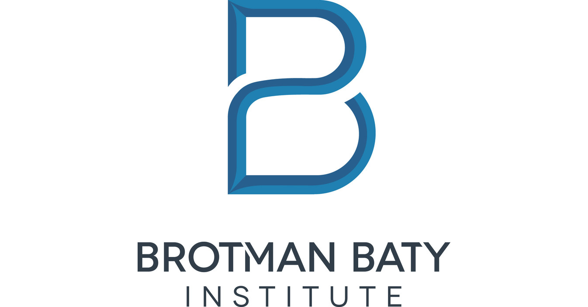

Dylan Renard
Bioinformatician | M.S. Bioinformatics @ Johns Hopkins University
drenard888@gmail.com | LinkedIn | Seattle, WA
Download My Resume
Bioinformatician | M.S. Bioinformatics @ Johns Hopkins University
drenard888@gmail.com | LinkedIn | Seattle, WA
Download My ResumeI am a driven and detail-oriented bioinformatician passionate about solving complex biological problems through computational methods. My work spans spatial biology, microbiome research, and high-throughput data analysis. I combine a solid foundation in biochemistry with advanced programming and data science skills to design robust pipelines, automate analyses, and produce meaningful visualizations. My goal is to bridge the gap between biological experimentation and data interpretation, enabling faster, more accurate scientific discoveries.
 Bruker Spatial Biology — Instrument Production Associate (2023–Present)
Collaborated cross-functionally with engineering, supply chain, and logistics teams to streamline CosMx SMI instrument production. Improved traceability and reduced downtime through automated inventory tracking and process documentation. Contributed to QC workflows and production data analysis to support scaling efforts.
 Seres Therapeutics — Biotechnology Data Analyst Co-Op (2023)
Seres Therapeutics — Biotechnology Data Analyst Co-Op (2023)
Designed automated analysis pipelines for microbial assays using R and RShiny. Built tools to track reagent quality, sample throughput, and visualization of experiment batches. Delivered dashboards that increased team insight into run efficiency and saved 10+ hours/week in manual tracking.
 Seattle Flu Study, Brotman Baty Institute — Data Lead (2021–2023)
Managed data collection, validation, and dashboard creation for large-scale COVID-19 and influenza surveillance in Seattle. Led a student analytics team to integrate AWS-hosted data with Tableau dashboards and Google APIs, improving reporting accuracy and stakeholder visibility.
 Johns Hopkins University
Johns Hopkins University
M.S. in Bioinformatics, Expected 2026
Focus areas include computational genomics, systems biology, and structural bioinformatics. Coursework emphasizes algorithm development, database design, and next-gen sequencing analysis.
University of Washington
B.A. in Biochemistry, Minor in Data Science, 2023
Graduated with honors. Conducted research on protein interactions, completed a capstone in biological data visualization, and led peer instruction in bioinformatics tools.